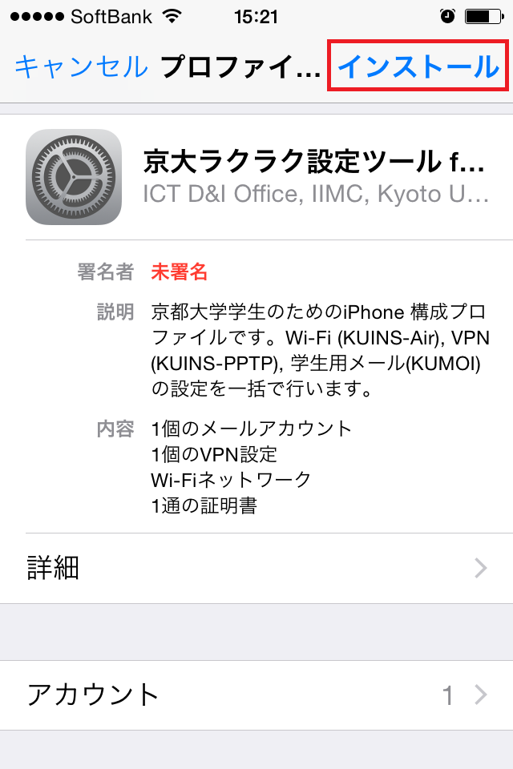
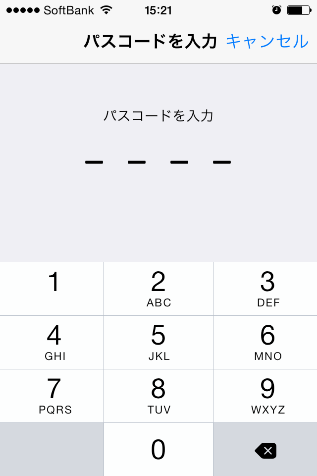
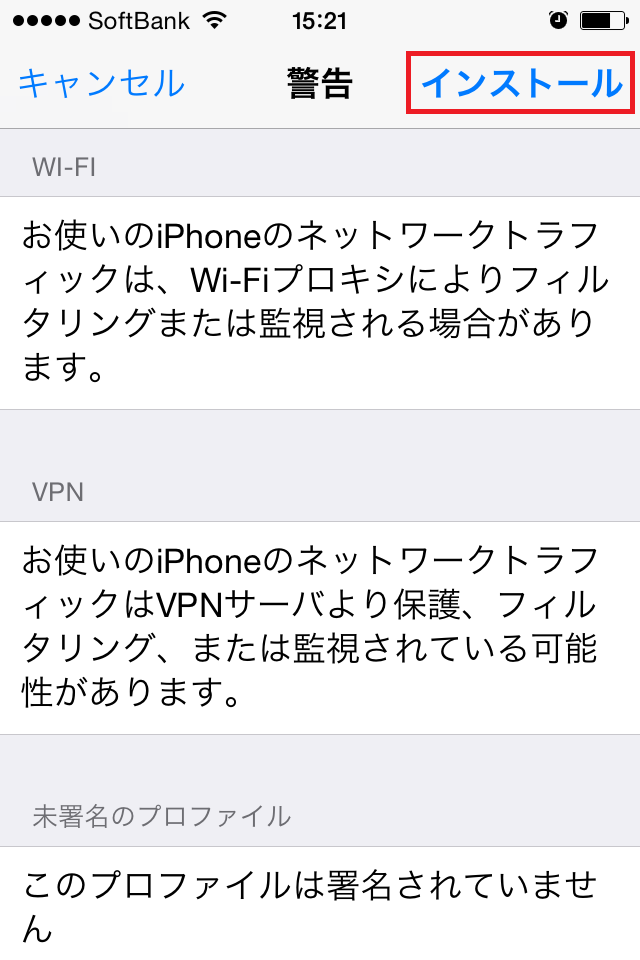
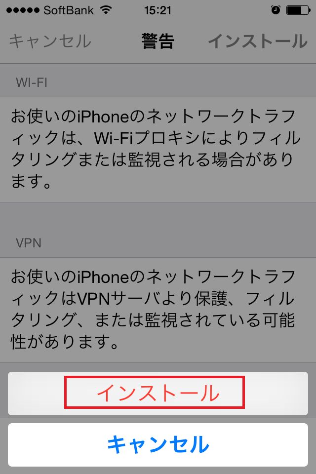
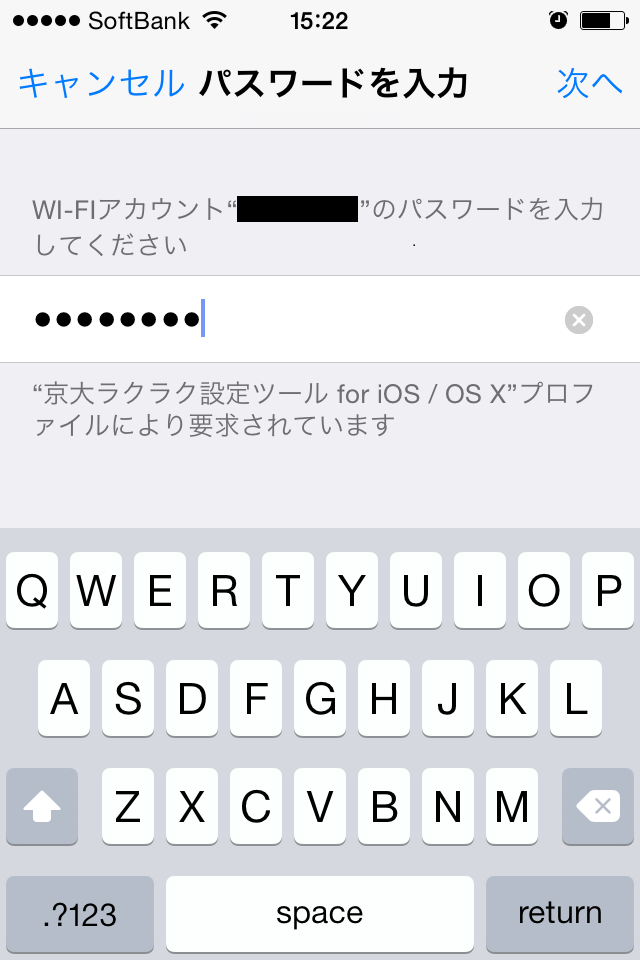
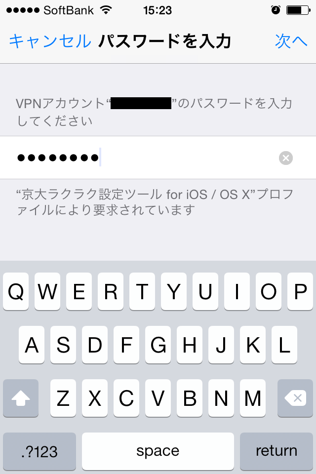
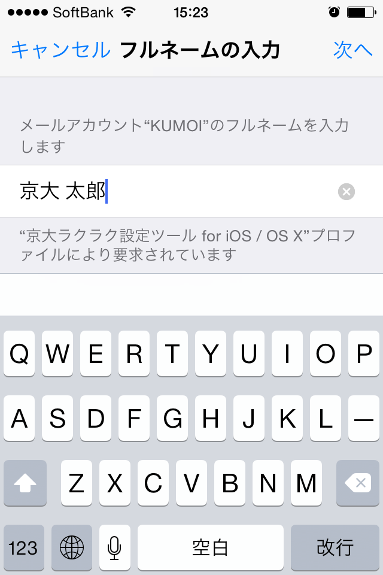
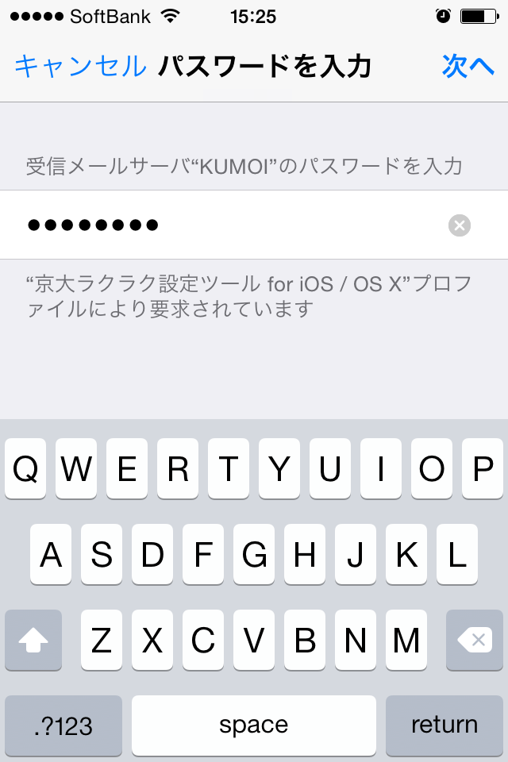
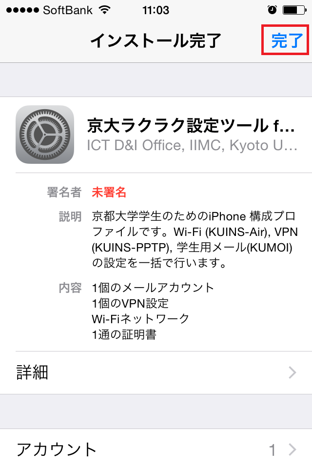

「インストール」ボタンをタップします。
iPhone にパスコードロックがかかっている場合、パスコードを入力します。
「インストール」をタップします。
再度「インストール」をタップします。
ECS-ID のパスワードを入力します(WiFi用)。
Step 5と同じパスワードを入力します(VPN用)。
メール(KUMOI)での表示名を入力します。
Step 5と同じパスワードを入力します(メール用)。
完了ボタンを押してインストールは完了です。
ホーム画面から 設定 > Wi-Fi を開き、"KUIS-Air" を選択します。
ダウンロード画面に戻る